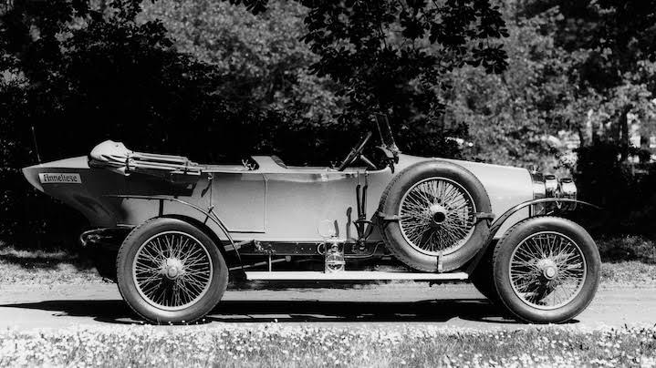
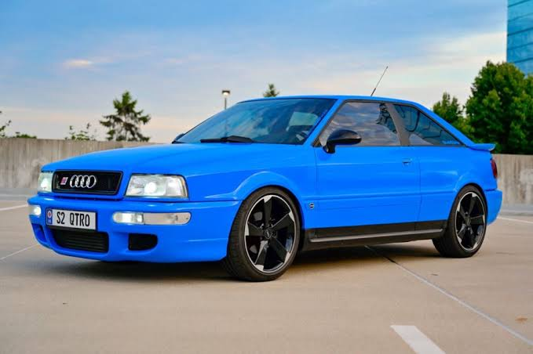

| Company name | Auto Union Deutschland Ingolstadt |
|---|---|
| Founder | August Horch |
| Founded on | 16 July 1909, Zwickau, Germany |
| Headquarters | Ingoistadt, Germany |
| Parent organization | Volkswagen Group |
| Chairman | Dr. Herbert Diess |
| CEO | Markus Duesmann |
| No.of production plants | 11 |
| Customer service | 011 4573 5512 |
Audi AG is a German automobile manufacturer that designs, engineers, produces, markets and distributes luxury vehicles. Audi is a member of the Volkswagen Group and has its roots at Ingolstadt, Bavaria, Germany. Audi-branded vehicles are produced in nine production facilities worldwide.
The story of Audi began in 1899 August Horch founded Horch & Cie. in Cologne. It was there that he helped build his first car. After differences of opinion with the board, August Horch left the company and formed a second car company. Because his surname was already in use and was protected by trademark, he chose its Latin translation for the new company. So "horch!" – or "hark" – became "audi!". It was a brilliant idea that came from the son of one of August Horch's business partners.
Thanks to his victorious involvement in the Austrian Alpine Runs, August Horch succeeded in making Audi internationally known in just a few years. After the First World War, August Horch withdrew from the company and moved to Berlin to work as an independent automotive expert.
Take a trip through the storied past of Audi and learn about everything from the production of the first left hand drive vehicle to the invention of legendary Audi quattro® all-wheel drive. Soon, you'll understand why Audi is one of the most hallowed names in any industry.